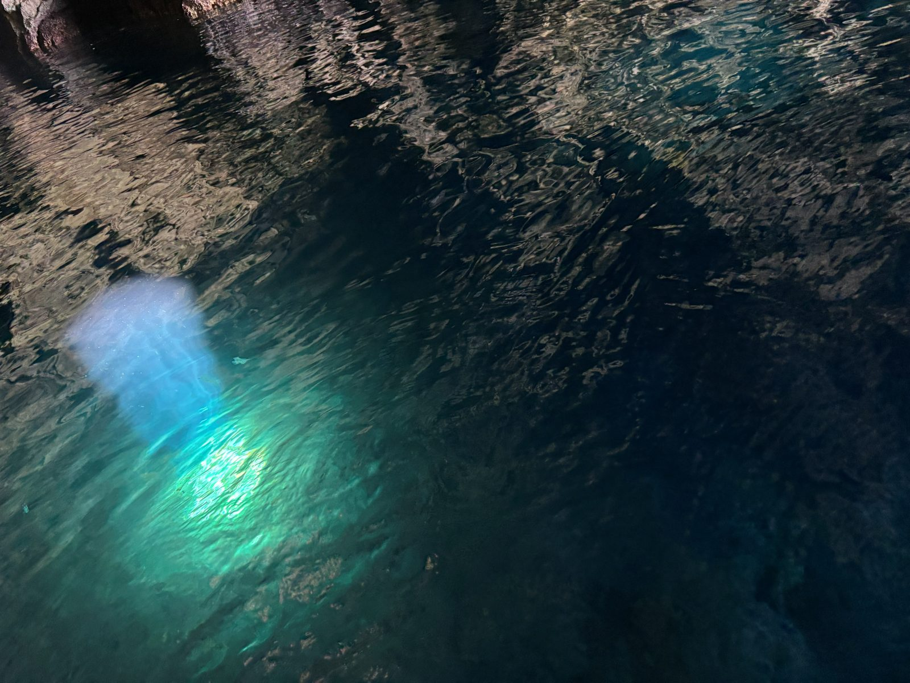

CROATIA
Tuesday (Travel)
- Got to the airport lounge and waited there for about an hour before going to our gate to board
- We sat in the plane for 30 or so minutes before they said we had to switch planes
- 5:45 flight didn't take off until after 7:45
- Got on the bus to Split from the airport at 9:50
- Walked to our Airbnb, showered, and slept
Wednesday (Split)
- Got up at 6:30 and got bread and pretzels on the way to the meeting point for the boat tour
- 1-1.5 hr boat ride to blue caves which was awesome
-
1 / 3
- Next was Komiza where we shared a pizza and walked around a well preserved old town
- Kind of like Aegina
-
1 / 2
- Kind of like Aegina
- Then we saw the limestone caves and the green cave
- Not as cool as the blue cave but still neat to see how many limestone caves there were

- Not as cool as the blue cave but still neat to see how many limestone caves there were
- Next was blue lagoon
- Snorkeling wasn't great, nothing but a couple fish to see by the beach
- Last was Hvar
- Nice old town with a cool fortress up top
- We swam, shared another pizza, got gelato, walked around, and left
-
1 / 2
- Nice old town with a cool fortress up top
- We swam, shared another pizza, got gelato, walked around, and left
- Walked around Split for a while getting souvenirs, food, and just exploring
- Saw the Roman palace but couldn't go in since it was mass
-
1 / 3
- Saw the Roman palace but couldn't go in since it was mass
- Went home, showered, and slept at around 10
Thursday (Travel)
- Got up at 6:15 to store our bags and get on a 7:00 bus to Krka National Park
- Walked straight to the boat and got on pretty quickly
- 25ish min boat ride to the park and we walked straight to the falls
- Very pretty, seven waterfalls throughout a 1.5-2 mile trail
-
1 / 4
- Very pretty, seven waterfalls throughout a 1.5-2 mile trail
- Ate the lunch we packed at a picnic table and went back to the boat to go back to Skradin
- Walked around their flea market area and got Uštipci, like funnel cake balls
- Wandered around the town for a while
-
1 / 2
- Walked around their flea market area and got Uštipci, like funnel cake balls
- Wandered around the town for a while
- Got on the bus back to Split 15 min late at 12:35 and got back a little after 2
- Grabbed our bags and went straight to the Berlin airport for our "layover" to France
- Booked Croatia after we found out there was no school Thursday and we had already booked France and a layover in Berlin was our best/cheapest option to get from Split to Paris